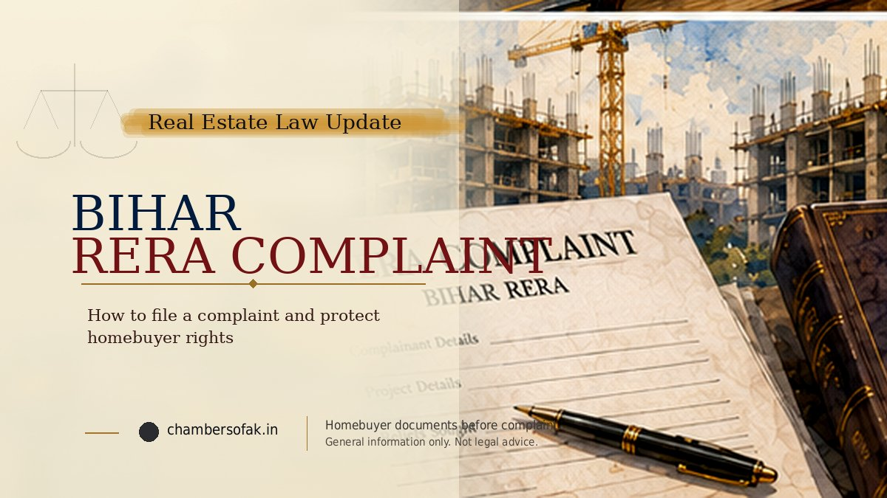

A complaint under Section 31 of the Real Estate (Regulation and Development) Act, 2016 can be filed before the appropriate RERA forum for violations involving a Bihar real estate project. Bihar Rules 36 and 37 deal with complaints before the Authority (Form M) and the Adjudicating Officer (Form N). The current official login instructions specify an online complaint fee of Rs 1,000. The correct route turns on the relief claimed and binding law, not merely the broad label of 'builder dispute'.

Bihar RERA complaint filing at a glance
- Confirm the project is located in Bihar and identify the legally responsible promoter.
- Check the project registration, relevant dates, contract and any earlier proceedings.
- Decide precisely whether the claim concerns refund, delay interest, possession/compliance, statutory compensation or a combination.
- Select the legally appropriate Authority or Adjudicating Officer route, and check the corresponding Form M/Form N portal option.
- Prepare a complaint, payment reconciliation, chronology, relief calculation and indexed evidence.
- File through the current Bihar RERA portal, pay the displayed fee and retain the acknowledgement.
- Monitor scrutiny, notices, replies, hearings and eventual compliance with the order.
1. Check whether Bihar RERA is the appropriate forum
Begin with the location of the project, its development phase and the party against whom relief is sought. A buyer living in Patna does not, by that fact alone, convert a project situated in another State into a Bihar RERA matter. Identify the project registration number, promoter's exact legal name and registered project details on the official Bihar RERA website. Match them against the allotment letter, agreement for sale, receipts and company details.
If the project is not shown as registered, examine whether registration was required, whether an exemption under Section 3 applies, whether a registration application is pending, and the actual construction and allotment chronology. Lack of a visible number is not enough to reach a final conclusion about jurisdiction or violation. Equally, the project's location and nature matter when choosing between Bihar RERA and a RERA authority in UP, Haryana or Delhi.
2. Identify the legal basis and relief before selecting a form
Section 31 permits an aggrieved person to complain of contraventions of the Act, rules or regulations to the Authority or the Adjudicating Officer, as applicable. Common questions concern a failure to deliver possession, non-refund of paid amounts, delay interest, unauthorised charges, changes to sanctioned plans, structural defects, and failure to perform statutory obligations. Each prayer should identify the underlying obligation, its breach and supporting evidence.
The choice between continuing with the property and seeking refund should be made consciously. Under Section 18, withdrawal with refund and prescribed interest differs from retaining the allotment and seeking interest for delay until handover; both should not be pleaded as if simultaneously final remedies without a clear lawful alternative basis. Claims for separate compensation require attention to Section 71 and the designated Adjudicating Officer.
3. Form M and Form N: what is the difference?
Rule 36 of the Bihar Real Estate (Regulation and Development) Rules, 2017 provides Form M for complaints to the Regulatory Authority. Rule 37 provides Form N for complaints before the Adjudicating Officer for claims in the area assigned to that officer. The public Bihar RERA login instructions describe Form M for possession, refund, compliance and quality issues, and Form N for compensation and/or interest claims. The portal user manual also describes automatic form selection based on the selected prayer.
Important legal qualification: The Supreme Court in Newtech Promoters and Developers Pvt. Ltd. v. State of Uttar Pradesh (11 November 2021) explained that directions for refund with interest and interest for delayed possession fall within the Regulatory Authority's power, while the adjudication of compensation and interest on that compensation under Sections 71-72 belongs to the Adjudicating Officer. Therefore, a generic portal reference to 'interest' under Form N cannot replace analysis of the actual statutory relief or controlling judgment. When the form-selection screen does not clearly match the legally correct forum, seek clarification from the Registry rather than misclassifying the claim.
Forum-selection examples
- Refund of deposits with prescribed interest for delayed possession: ordinarily analyse the Regulatory Authority route under Section 18 and Newtech Promoters.
- Continue with the unit and seek statutory delay interest: ordinarily analyse the Regulatory Authority route, with the date of promised possession and actual handover in issue.
- Separate compensation for proved loss under Sections 12, 14, 18 or 19: examine the Adjudicating Officer's jurisdiction under Sections 71-72.
- Mixed relief: identify each component separately and verify whether the present portal requires distinct prayers or proceedings.
4. Which documents should be collected?
Prepare a numbered file and reconcile every assertion to a supporting document. The exact annexures depend on the grievance, but a homebuyer complaint normally requires the following:
- Parties and project: complainant identity, promoter legal name and address, relevant project registration details, tower/phase and unit identification.
- Booking and contract: application, allotment, signed agreement for sale, payment plan, specifications and signed amendments.
- Financial record: dated builder receipts, bank debits, UTR references, promoter ledger, home-loan disbursements and evidence of any part-refund or credit.
- Possession and performance: agreed date, grace period, project extension order, occupancy/completion certificate where relevant, possession offers and final demands.
- Correspondence: notices, emails, messages, responses, acknowledgements, builder default allegations, cancellation or settlement documents.
- Other proceedings: earlier RERA, consumer, civil or other dispute records and signed orders where they affect the matter.
- Complaint filing set: chronology, clearly separated prayers, interest or refund worksheet, indexed annexures, verification and authorisation where the complainant is represented.
A builder ledger and a bank statement may refer to the same payment: do not add the two totals together. Explain any discrepancy between payments claimed and receipts issued. See the separate homebuyer evidence checklist for a more detailed payment and annexure method.
5. Preparing Form M: facts, relief and verification
The Form M schedule under Bihar Rule 36 calls for the parties' particulars, a statement of jurisdiction, concise facts, precise relief, any interim order requested with reasons, information on pending related cases, filing-fee particulars, enclosures and verification. It is not enough to paste an informal story into the portal and attach unindexed documents. State what was agreed, how much was paid, when performance was due, what happened and which statutory remedy follows from those facts.
Claims for refund, interest and compensation should be separately described rather than combined into an unexplained lump sum. Any interim direction must have its own factual foundation. If another related proceeding is pending or disposed of, disclose it accurately and consider maintainability and the prohibition on double recovery; never sign a blanket no-pendency declaration that contradicts the actual record.
6. Bihar RERA online complaint filing: practical sequence
Use the official Bihar RERA public login rather than an intermediary site. The Authority publishes a Complaint User Manual, though its screenshots and menus must be read subject to the current live application and subsequently notified regulations.
- Create or access the complainant account. Keep the registered email address and login credentials secure.
- Read the current complaint instructions. Identify the claim's actual legal basis before selecting a relief or prayer category.
- Enter project and promoter details. Verify project registration, tower/unit, entity name and addresses against the documents.
- Enter the complainant and respondent particulars. Supply a valid address for service and any representation details required by the portal.
- Provide the factual chronology and relief sought. Reconcile principal, statutory interest and any compensation rather than adding overlapping amounts.
- Upload the required records. Use legible, complete, correctly ordered attachments in the file types and size limits displayed by the current portal.
- Review declarations and pay the fee. The public login instructions currently specify Rs 1,000, payable online through the payment gateway. Verify the amount and method immediately before payment.
- Submit and preserve proof. Save the complaint acknowledgement, transaction receipt, filing number, uploaded set and any email or portal status.
A draft on the portal is not necessarily an accepted or registered complaint. Check whether scrutiny, defect curing, additional documentation or physical submission is directed by the Authority. Do not assume a fee transaction alone completes every filing requirement.
7. What happens after submission?
Under the 2017 Rules, the Authority or Adjudicating Officer follows a summary inquiry process. Typically the respondent receives notice of the allegations and relevant documents, may file a reply within the period specified, and the forum may hear the parties or require further material. Depending on the evidence and compliance with procedural directions, it can pass an appropriate reasoned order or dismiss the complaint. Exact dates, hearing modes and filing directions come from the case-specific notice and current regulations.
Track the case number, hearing orders, uploaded pleadings, proof of service and each compliance deadline. If the promoter disputes the amount paid or alleges allottee default, keep the reconciliation and relevant contract provisions ready. Do not rely solely on oral assurances that the matter has been disposed of.
8. Bihar regulations updated in September 2026
The official Bihar RERA Public Notices list the Bihar Real Estate Regulatory Authority (General) Regulations, 2026, notified on 16 September 2026. Before filing, verify the operative regulations, any saving or transitional provisions, the current portal workflow, complaint format, electronic documentation and Registry directions. A 2024 manual or an earlier printed form should not be treated as automatically controlling in October 2026.
9. Order, appeal and execution are separate stages
A favourable order does not automatically transfer money or deliver possession. Read its operative directions, payment/compliance dates, any appeal or stay and the applicable enforcement route. Section 40 provides distinct monetary recovery and non-monetary enforcement mechanisms. A person considering an appeal should separately examine Sections 43-44, limitation and statutory pre-deposit requirements where applicable; an appeal does not invariably mean an effective stay has been granted. For subsequent compliance work, see the RERA Section 40 enforcement guide.
10. Frequent mistakes in Bihar RERA complaints
- Selecting Form N for every claim described as 'interest' without reviewing the Newtech Promoters forum distinction.
- Entering the project's marketing name but naming the wrong legal promoter as respondent.
- Claiming a refund total that exceeds or contradicts the underlying receipts and actual bank records.
- Asserting a possession date without the relevant agreement or other admissible commitment.
- Ignoring buyer-side instalment defaults, cancellations, possession offers, credits or settlements.
- Omitting a related consumer or civil proceeding from the declarations.
- Using an older printed fee, upload specification or form despite newer portal instructions.
- Requesting an unawarded amount during execution instead of seeking enforcement of the actual order.
Conclusion
A Bihar RERA complaint should be prepared around a legally correct forum, an exact relief and a verifiable chronology. Form selection, project identification, payment records and procedural compliance are interdependent: an error in any of them may require corrections later. Read the current Bihar regulations and case-specific orders before acting; procedures and remedies ultimately depend on the underlying documents and applicable law.
Last updated on: 09/10/2026 at 08:50
Useful Internal Pages
References / Sources
- Real Estate (Regulation and Development) Act, 2016 - Sections 3, 11-14, 18-19, 31, 40, 43-44 and 71-72.
- Real Estate Regulatory Authority, Bihar - project verification and official services.
- Bihar Real Estate (Regulation and Development) Rules, 2017 - Rules 36 and 37 and Forms M and N (accessible reproduction; verify official text).
- Bihar RERA public complaint login and filing instructions - form selection guidance and current displayed complaint fee.
- Bihar RERA Complaint User Manual - filing workflow and prayer-selection interface.
- Newtech Promoters and Developers Pvt. Ltd. v. State of Uttar Pradesh, Supreme Court, 11 November 2021 - allocation of refund, delay interest and compensation powers.
- Bihar RERA Public Notices - General Regulations, 2026, notified 16 September 2026.